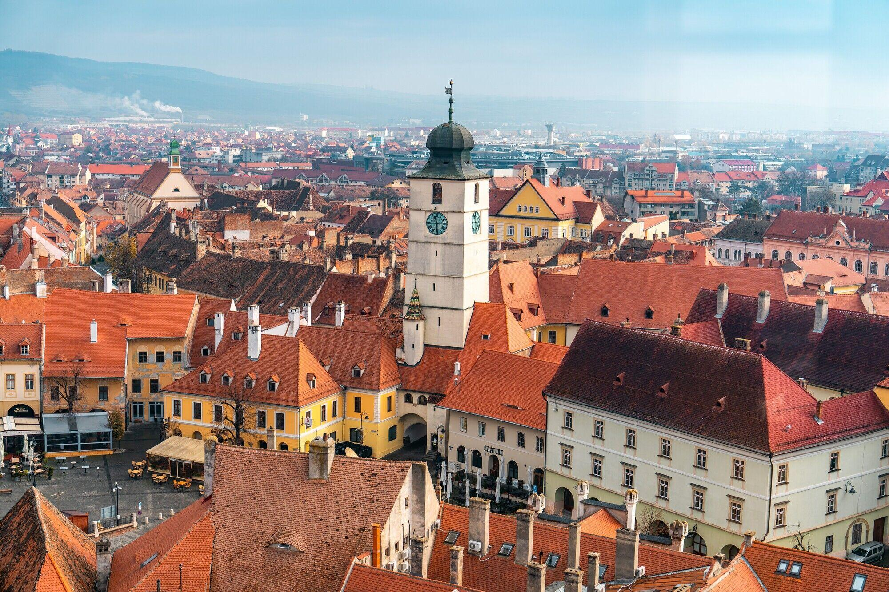

AI SEARCH STUDY · ROMANIA
Romania Map Pathfinding
Compare blind search and heuristic search
UCS · A* Search (Fruit Fly Scent)
Explore the Map →
AI SEARCH STUDY · ROMANIA
Compare blind search and heuristic search
UCS · A* Search (Fruit Fly Scent)
Explore the Map →